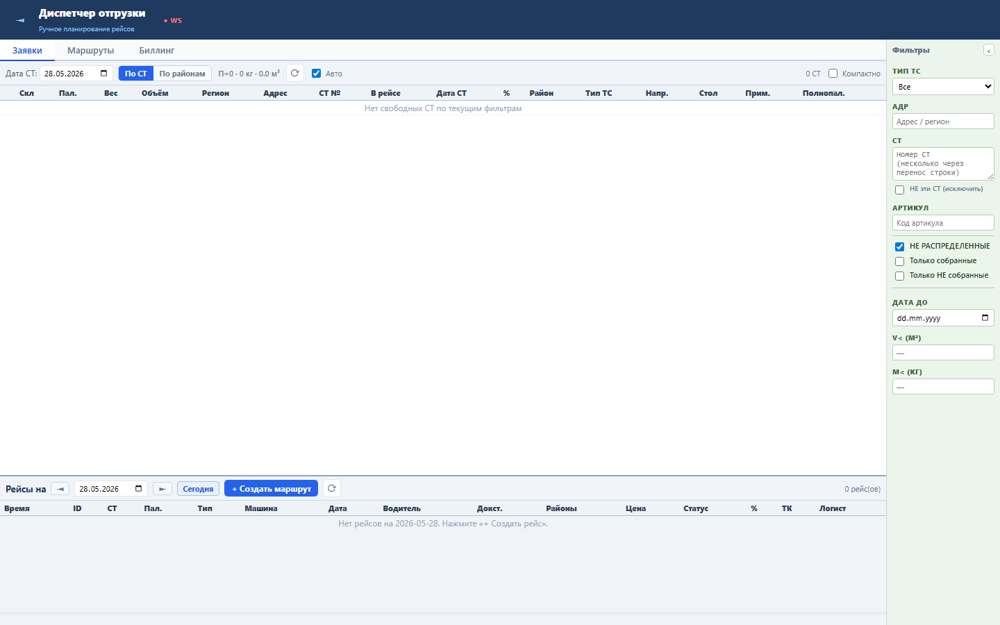
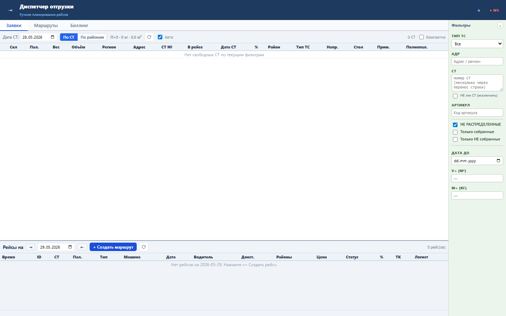
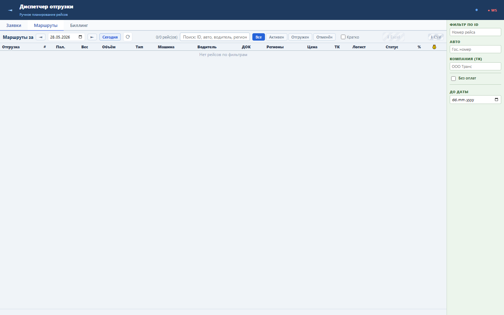
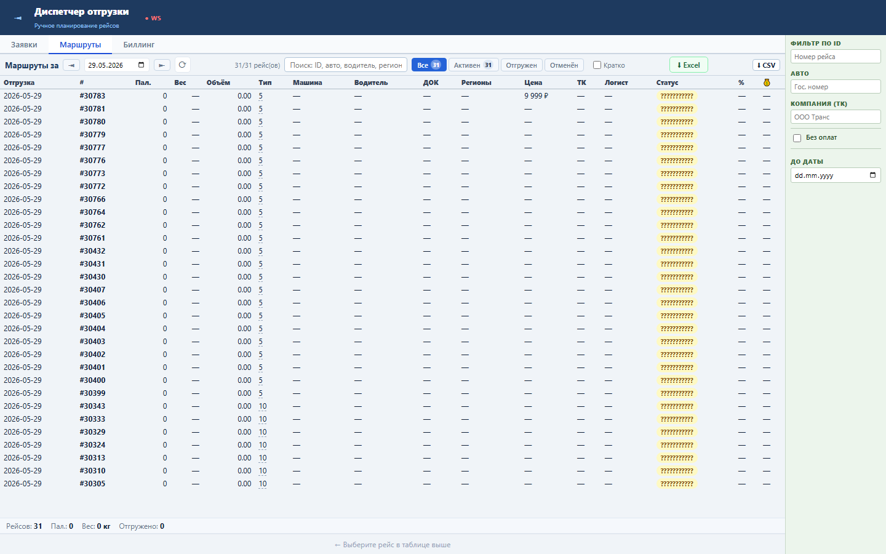

Блок ускоряет возврат диспетчера к текущей рабочей дате после просмотра прошлых или будущих дней.
Кнопка управляет клиентскими состояниями filterDate и routeShipDate. При сбросе выполняется немедленная загрузка GET /tasks?shipment_date=today.
Sprint 48 закрыт functional, load и UI smoke проверками.



